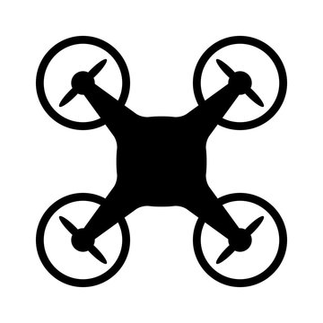

I am a PhD candidate specializing in aircraft and drone noise. My work combines acoustic measurements, signal processing, sound source modeling, outdoor sound propagation, and auralization, with a particular focus on assessing and reducing drone noise.
Empa | 2022 - Present
I specialize in multicopter noise modeling, simulation, and measurements, assess noise levels and synthesize corresponding sound signals. This includes acoustic signal processing. I am responsible for developing and maintaining sonAIR , the Empa-own aircraft noise simulation tool. With this tool, I conduct aircraft noise simulations, for which I developed a machine learning parameter estimation method.
Empa | 2020 - 2022
I specialized in aircraft noise simulation, mapping, and reporting for Swiss airports. Additionally, I conducted aircraft noise measurements and took responsibility for the maintenance and enhancement of sonAIR , the Empa-own aircraft noise simulation model.
University Ghent / Empa | 2024 - 2027 (planned)
In my PhD I focus on the acoustic measurement and synthesis of drone noise, the interactions of its individual components and the evaluation of low-noise measures.
ETH Zurich | 2017 - 2019
ETH Zurich | 2012 - 2017

Acoustic and aerodynamic performance evaluation of a commercial toroidal propeller compared to conventional propellers
J. Meister, T. Van Renterghem, R. Pieren, Acta Acustica, 2026.
Read PaperMeasured differences in the sound emission of multi-rotor unmanned aerial systems during hover and cruise
J. Meister, J. Jaeggi, T. Van Renterghem, R. Pieren, JASA, 2026.
Read PaperImproved configuration management for greener approaches: evaluation of a novel pilot support concept
T. Bauer, F. Abdelmoula, J. Boyer, M. Gerber, J. Meister and J.M. Wunderli, CEAS Aeronautical Journal, 2025.
Read PaperConfiguration Estimation from Position Data of Civil Jet Aircraft for Noise Mapping
J. Meister and S. Schalcher, Journal of Aircraft, 2025.
Read PaperShort-term noise annoyance towards drones and other transportation noise sources: A laboratory study
C. Kawai, J. Jaeggi, F. Georgiou, J. Meister, R. Pieren, B. Schäffer, J. Acoust. Soc. Am., 2024.
Read PaperPilot Assistance Systems for Energy-Optimized Approaches: Is It Possible to Reduce Fuel Consumption and Noise at the Same Time?
J.M. Wunderli, J. Meister, J. Boyer, M. Gerber, T. Bauer, F. Abdelmoula, Aerospace (MDPI), 2024.
Read PaperPower setting estimation of departing civil jet aircraft based on machine learning
J. Meister, Journal of Aircraft, 2024.
Read PaperA Method to Measure and Model Acoustic Emissions of Multicopters
J.M. Wunderli, J. Meister, O. Boolakee, K. Heutschi, International Journal of Environmental Research and Public Health, 2023.
Read PaperAircraft noise in situations with grazing sound incidence - Comparing different modeling approaches
J.M. Wunderli, J. Meister, D. Jäger, S. Schalcher, C. Zellmann, B. Schäffer, The Journal of the Acoustical Society of America, 2022.
Read PaperComparison of the Aircraft Noise Calculation Programs sonAIR, FLULA2 and AEDT with Noise Measurements of Single Flights
J. Meister, S. Schalcher, J.M. Wunderli, D. Jäger, C. Zellmann, B. Schäffer, Aerospace (MDPI), 2021.
Read PaperDifferences in sound emission level of multi-rotor UAS during hover and cruise
J. Meister, Jonas Jaeggi, Timothy van Renterghem, Reto Pieren, ForumAcusticum/EURONOISE 2025, Malaga, Spain.
UAV noise emission characterisation using a compact on-board measurement system
J. Meister, Jonas Jaeggi, Timothy van Renterghem, Reto Pieren, QuietDrones 2024, Manchester, England.
Assessing the performance of the sonAIR aircraft noise model in predicting noise levels at Schiphol Airport
R. Boelhouwer, R. van der Grift, M. Snellen, D. Simons, J. Meister, J.M. Wunderli, 30th AIAA/CEAS Aeroacoustic Conference 2024, Rome, Italy.
N1 estimation of jet aircraft for departures using basic operational data
J. Meister, Forum Acusticum 2023, Torino, Italy.
Improved energy management during arrival for lower emissions
P. Pauly, J. Meister, J.M. Wunderli, M. Gerber, J. Boyer, F. Abdelmoula, T. Bauer, Towards Sustainable Aviation Summit 2022, Toulouse, France.
Calculation of annual aircraft noise exposure for Geneva and Zurich airports with the next-generation program sonAIR – first results
S. Schalcher, C. Zellmann, J. Meister, J.M. Wunderli, B. Schäffer, Internoise 2022, Glasgow, Scotland.
Validation of three aircraft noise calculation models
J. Meister, S. Schalcher, J.M. Wunderli, B. Schäffer, Internoise 2022, Glasgow, Scotland.
Improved Configuration Management for Greener Approaches - Evaluation of a Novel Pilot Support Concept
T. Bauer, F. Abdelmoula, J. Boyer, M. Gerber, J. Meister, J.M. Wunderli, 33rd congress of the international council of the aeronautical sciences 2022, Stockholm, Sweden.